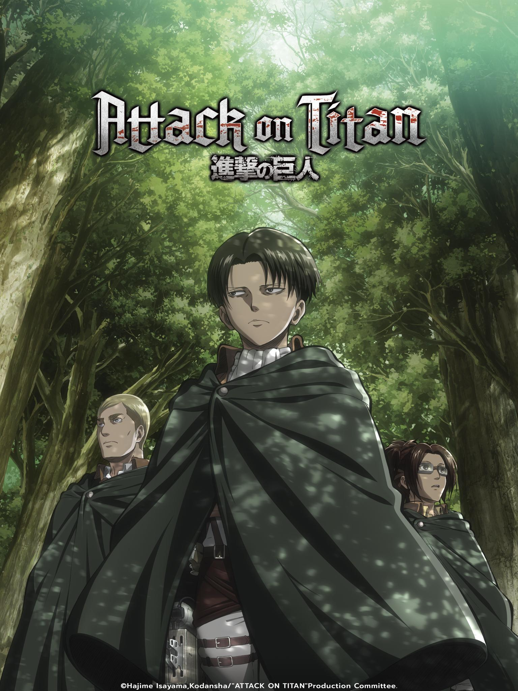
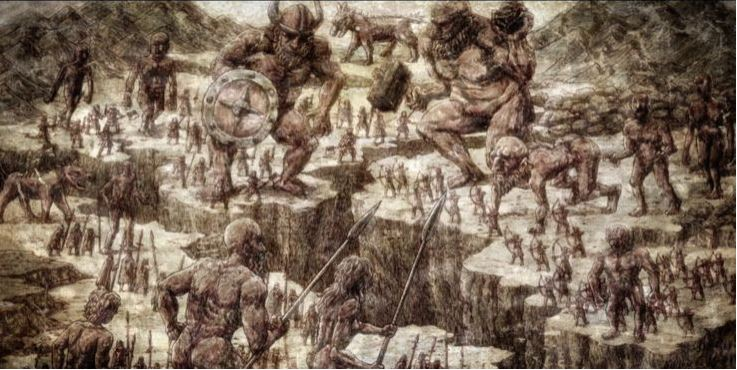

História

Attack on Titan se tornou um dos mangás e animes mais conhecidos dos últimos anos,
por conta de sua
história apocalíptica em que a humanidade precisa se proteger dos titãs,
gigantes que gostam de se
alimentar dos seres humanos. Vários deles habitam esse mundo fantasioso,
mas existem alguns que se
sobressaem em relação aos demais.
No caso, estamos falando dos nove titãs originais,
que repassaram seus poderes para várias gerações
e
estão entre os mais poderosos nesse universo criado por Hajime Isayama.
Titã Fundador

Ymir Fritz se tornou o Titã Fundador em um passado distante. A partir de seus descendentes, outros titãs
surgiram,
dando início a uma raça de pessoas que poderiam se transformar neles. Grisha Jaeger,
pai do
protagonista Eren, já tentou se transformar no Titã Fundador.
Para o azar de Grisha,
apenas descendentes diretos de Ymir podem herdar os poderes do Titã Fundador,
que
tem como principal habilidade controlar outros titãs. Apesar disso, Eren, atual portador desse titã,
até
conseguiu desenvolver esse poder após encontrar Zeke.
O Titã Fundador também é conhecido por ser virtualmente imortal,
já que consegue se recuperar de ataques
letais.
- Temporada 1
- Temporada 2
- Temporada 3
- Temporada 4